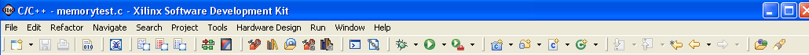

| Icon | Command | Description |
|---|---|---|
| Create New | Create a new project, folder, or file. | |
| Save | Save the content of the current editor. Disabled if the editor does not contain unsaved changes. | |
| Prints the content of the current editor. | ||
| XMD Console | Open XMD Console view | |
| View Design Report | Opens the Hardware system design difference between the current and previous referenced system in the browser. | |
| View Design Differences | Opens the Design Report for the System in the browser | |
|
Import Hardware Design | Specify a hardware specification file required for software application development |
| Program FPGA | Program the FPGA connected to the JTAG cable interface | |
| Program Flash Memory | Program a flash memory on the target board. The programming is done via the JTAG cable interface | |
| Create New BSP | Create a new Board Support Package project | |
|
Create New Software Platform | Create a new Software Platform project |
| Software Repositories | Add, change, or remove software repositories | |
| Board Support Package Settings | Customize the Board Support Package | |
| Software Platform Settings | Customize the libraries and drivers for the Software Platform | |
| Bash Shell | Launch the Command shell | |
| Generate Linker Script | Configure and generate linker script | |
| Create C++ Class | Creates a C++ class within the current project. | |
| Create Source Folder | Creates a source folder within the current project. | |
| Create C/C++ File | Creates a C/C++ file within the current project. | |
| Create C/C++ Project | Create a New C/C++ project | |
| Debug | Launches the Debug dialog box. | |
| Run | Launches the Run dialog box | |
| External Tools | Launches the External Tools dialog box | |
| Open Type | Brings up the Open Type selection dialog to open a type in the editor. The Open Type selection dialog shows all types existing in the workspace. | |
| Search | Launches the C/C++ Search dialog box | |
| Synchronize | Synchronizes selected project to CVS repository. | |
| Go to Last Edit Location | Returns editor view to the last line edited, if the file that was last edited was closed it will be re-opened. | |
| Back | Navigates back through open files. | |
| Forward | Navigates forward through open files. | |
| Go to Next Problem | Navigates to the next problem marked during the last build attempt. | |
| Go to Previous Problem | Navigates to the previous problem marked during the last build attempt. |
Copyright © 1995-2009 Xilinx, Inc. All rights reserved.